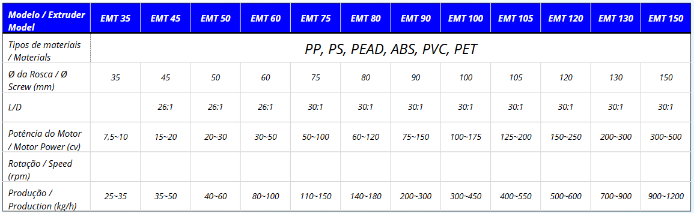
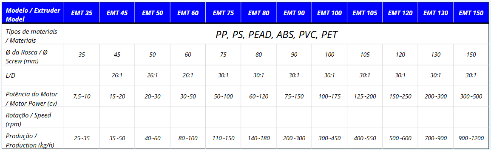
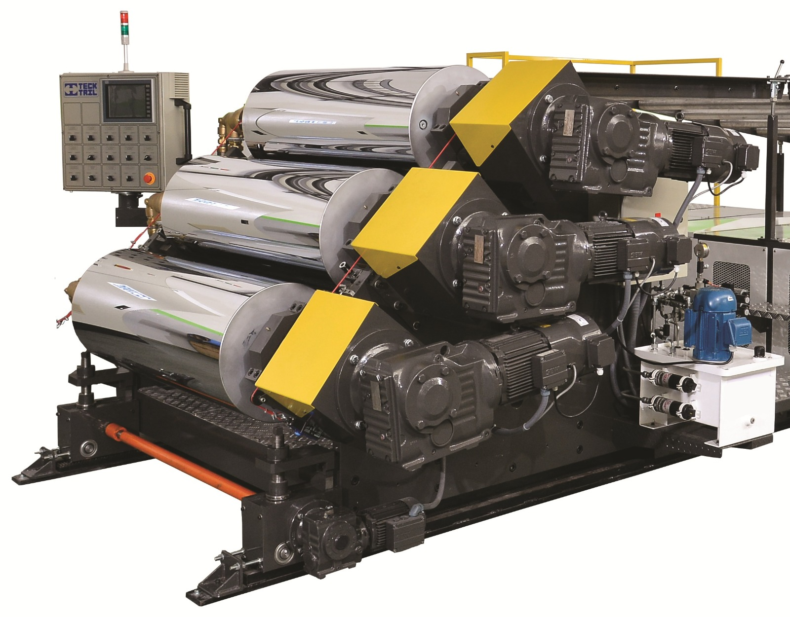
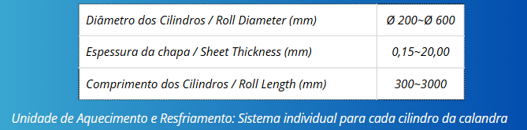
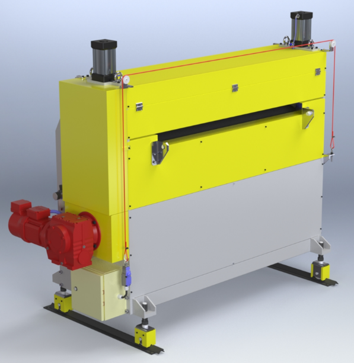
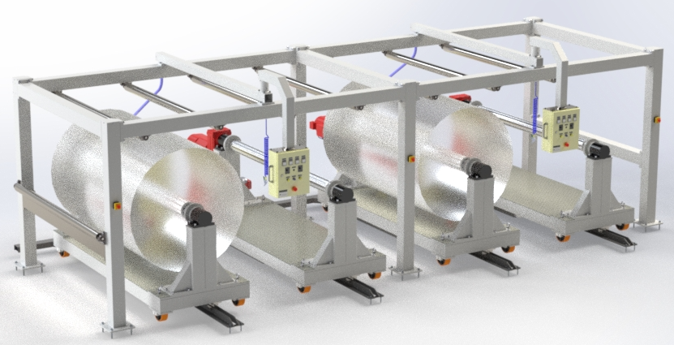

EXTRUSÃO DE LAMINADOS - CELT
• Extrusão e co-extrusão de plásticos - L/D de 30 a 35 - (PS, PP, PEAD, PEBD, ABS, PSAI, PVC, ACRILICO e PET).
• Painel de comando com IHM, CLPs, controladores microprocessados e reles de estado sólido.
• Aplicação: laminados, chapas, termo-formagem e vacum forming.
• Conjunto: extrusora, co-extrusoras, troca telas, bomba de engrenagem, feed-block, flat die, calandra, unidade de aquecimento e resfriamento, esteira de resfriamento, faca de refile, puxador, guilhotina, mesa recolhedora e bobinador.
EXTRUSORA MONO-ROSCA
 

• Extrusão e co-extrusão de plástico.
• Painel de comando com IHM, CLPs, controladores microprocessados e reles de estado sólido.
• Atendendo às demandas de nossos clientes, as extrusoras mono-rosca TECK TRIL destacam-se pela durabilidade, eficiência energética e alta produtividade, conforme as especificações técnicas exigidas.
CALANDRA


Calandra montada em estrutura de chapas de aço, oxicortadas e usinadas, próprias para montagem dos cilindros inclinados a 45°. Montagem sobre rodízios giratórios guiados sobre trilhos.
ACUMULADOR

• Estrutura reforçada fabricada com chapas de aço e perfis soldados.
• Cilindros de passagem fabricados com tubos usinados e cromados.
• Sincronia com motor do puxador.
• Grades e sensores de proteção conforme NR-12.
• Capacidade de acúmulo de 20 metros lineares de laminado.
BOBINADOR

• Estrutura reforçada fabricada com chapas de aço e perfis soldados.
• Acionamento através de quatro motorredutores comandados por inversores de frequência vetoriais com controle de torque.
• Facilidade para troca rápida.
• Capacidade Máx. da bobina Ø 700mm e largura de 1.600mm